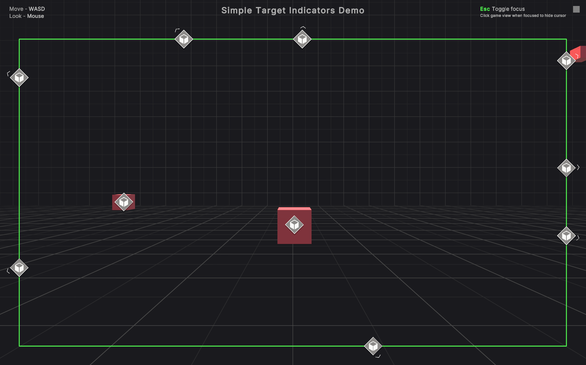
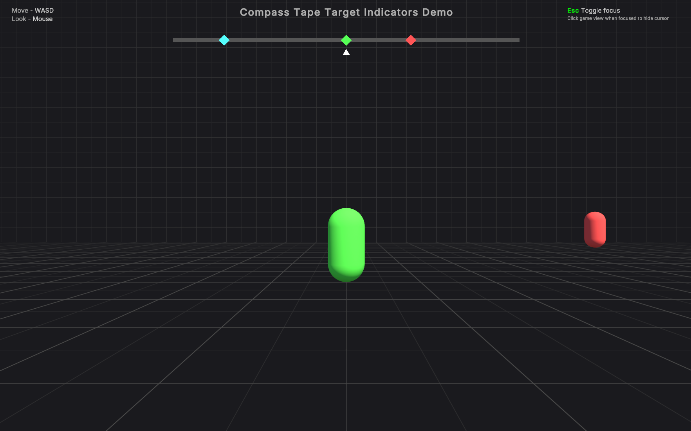
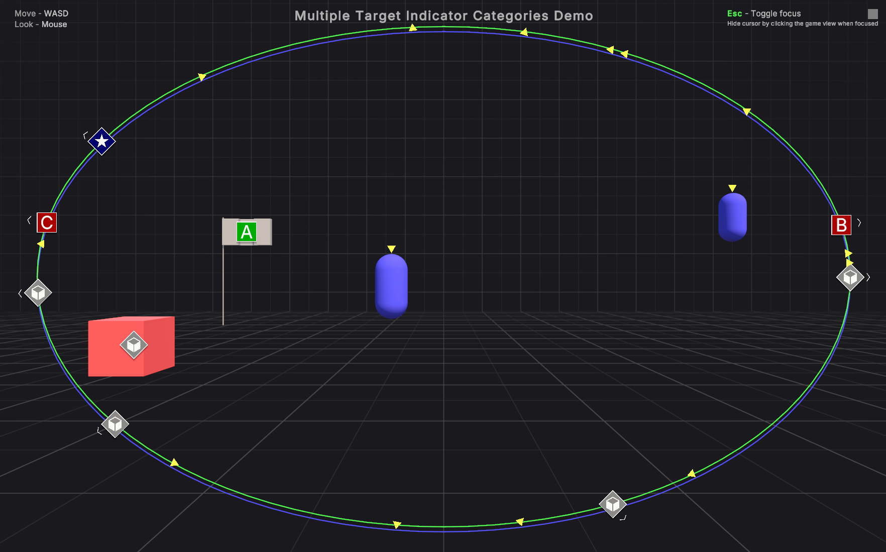

Sample scenes
The sample scenes are located in Assets/Samples/Target Indicators/[version]/StarterAssets/Example Assets/Scenes. The structure of each scene includes a group of helper scene objects that are unrelated to target indicators but required for the samples scene to work, such as the environment objects, directional light, event system, etc.
The target indicators related scripts are located under the --- Target Indicator Managers --- GameObject in the hiearchy. This is where you can find how target indicators are setup in the scene and the targets that are being tracked.
The visual indicators that get instantiated for the UI uses uGUI (Unity UI) and are parented under the Canvas beneath the --- UI --- GameObject in the hiearchy.
Scene interactions
Each scene has a simple first person controller script attached the to scenes Camera GameObject. To enable input while in play mode, press the Escape key on the keyboard to enable focus.
A visual indicator of the current focus state can be found in the top right of the Game window and looks like a gray square. The indicator will be white when focused and gray when unfocused. While focused, click the mouse anywhere in the Game window to hide the cursor. Pressing Escape will unfocus the game and reveal the cursor.
Focus and unfocus the game to edit the target indicator manager settings and experiement without having to exit play mode.
When the game is focused you can move around with WASD and look around with the mouse.
Scenes
There are three scenes to demonstrate a few variations of using target indiecators. The following sections describes each scene in more detail.
Simple Target Indicators Demo

This scene demonstrates a minimal version of target indicators and is a good starting point. It uses only one visual indicator manager and one visual indicator prefab.
The assigned default visual indicator prefab assigned in the visual indicator manager is what indicators get instantiated in the scene. They are parented to the Canvas under the Target Indicators Content GameObject.
The Simple Targets Indicators Setup Example GameObject contains a script SimpleTargetIndicatorSetupExample that shows a minimal code example for assigning targets to the target indicator manager on Start.
Note
Changing the target indicator manager's boundary type to compass tape will stop the target indicators from updating. Compass tape boundary types require special configuration. Refer to compass tape visual indicator manager to learn how to work with a compass tape target indicator.
Compass Tape Target Indicators Demo

This scene demonstrates how to setup a compass tape target indicator. The target indicator manager's BoundaryType is set to CompassTape and uses the CompassTapeVisualIndicator on the Compass Tape Visual Indicator Manager GameObject.
The default visual indicator prefab uses the CompassTapeVisualIndicator prefab. The compass tape visual indicators are instantiated and parented to the UI Compass Tape Indicators Content GameObject under the Canvas.
The Compass Tape Target Indicators Setup Example GameObject contains a script CompassTapeTargetIndicatorsSetupExample that shows a minimal code example for assigning targets to the compass target visual indicator manager on Start.
Multiple Target Indicator Categories Demo

This scene demonstrates using multiple target indicator managers for different visual indicator categories. There are two target indicator managers that both use padded boundary type but with different padding values.
The reason is because one of the visual indicators, the Enemy Target Indicator found in the Example Assets prefabs folder, has an offset raised by 10 pixels. Therefore it uses a target indicator manager with an adjusted boundary so it aligns with the other visual indicators on the screen.
The Multiple Target Categories Setup Example GameObject contains a script MultipleTargetIndicatorCategoriesExample that shows a minimal code example for assigning targets with different visual indicators to two different visual indicator managers on Start.